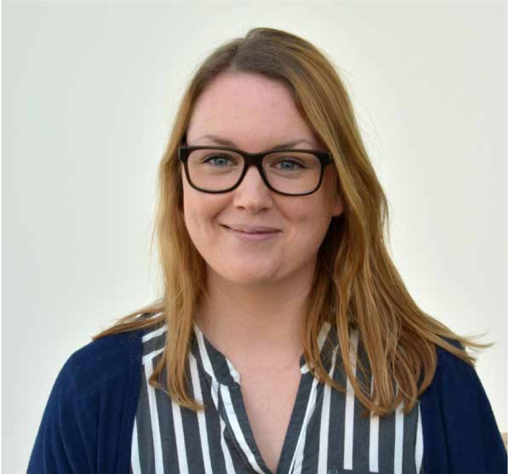
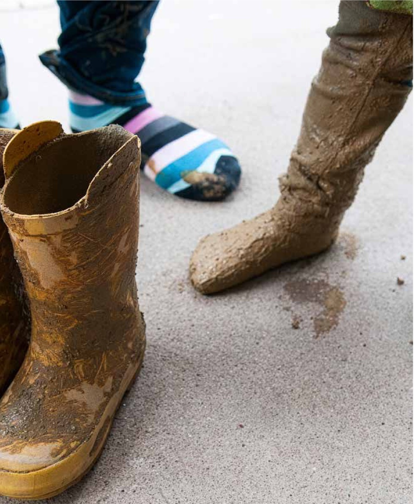
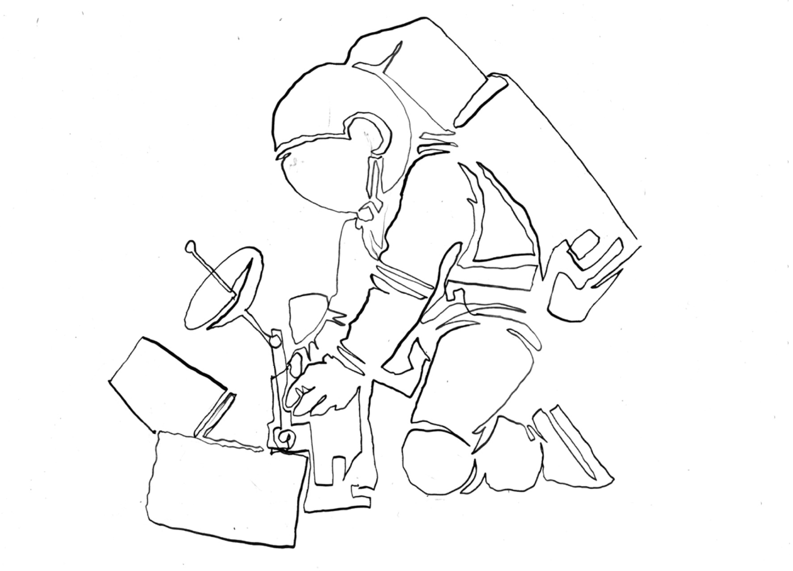
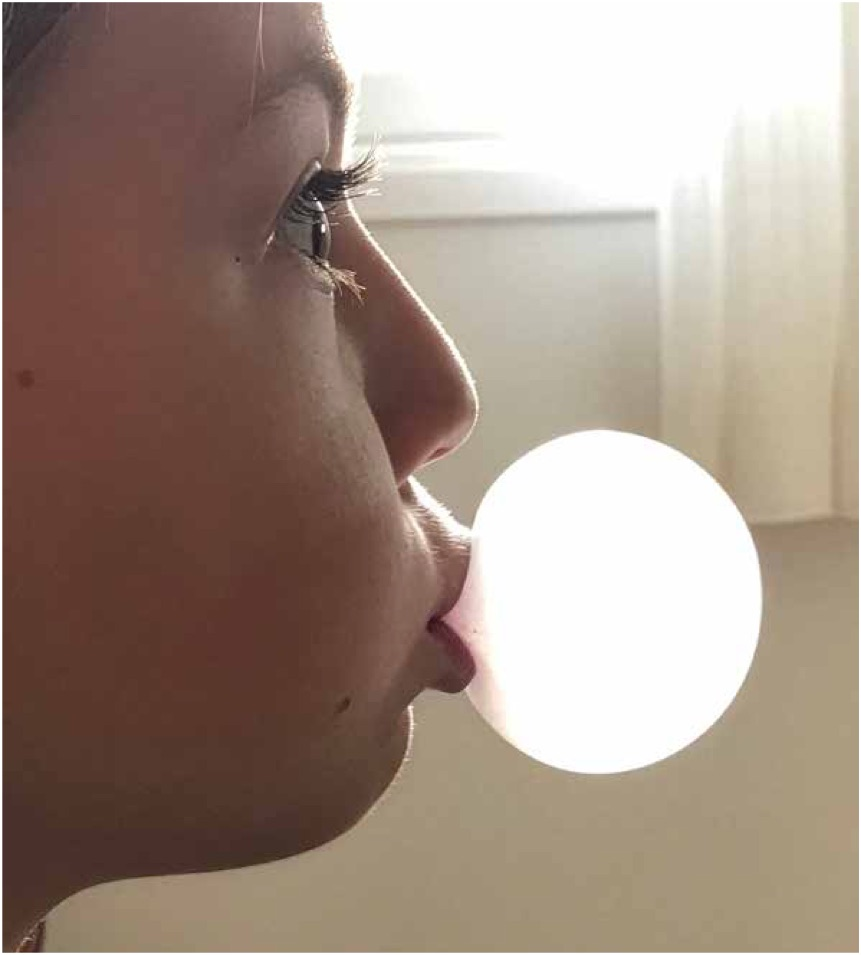
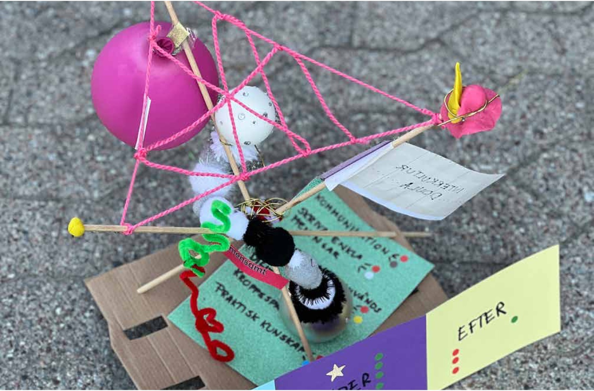
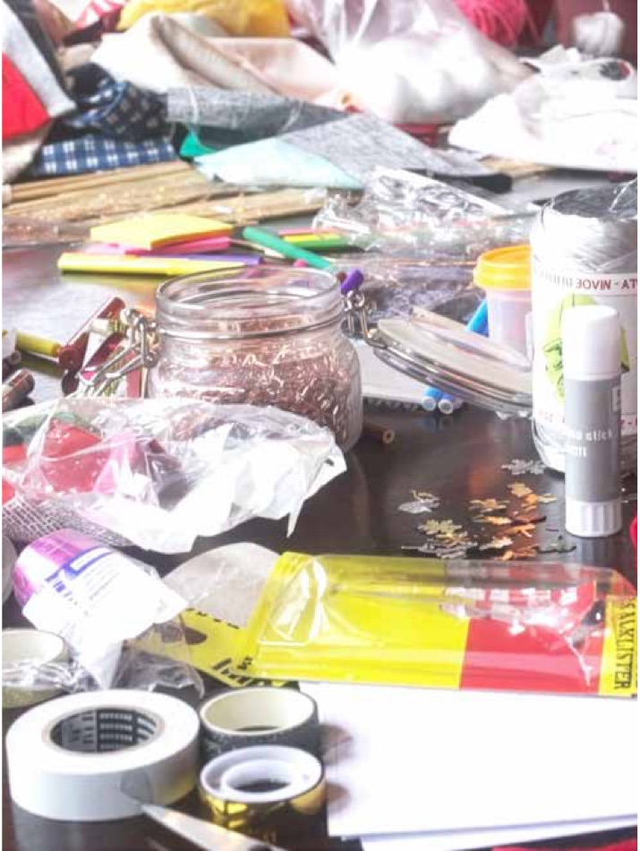

Vi pratar ofta om motivationens stora betydelse för möjligheten att lära – litteraturen om motivation är enorm och kommer från flera andra fält än pedagogikens, bland annat förstås från psykologin. Redan Deci & Ryan (1985; 2000) visade i sin forskning kring Self-Determination Theory, att inre motivation uppstår när tre grundläggande psykologiska behov tillgodoses: autonomi, kompetens och samhörighet. Men i praktiken agerar vi inte sällan som om motivation vore ett individuellt väsen som bara infinner sig ibland och lite lättare för en del. I själva verket är inre motivation något vi kan designa för, stimulera – och störa. Den är glöden som får oss att vilja veta mer, prova igen, bidra längre.
Vi har under vårt arbete med lärande och utveckling mött många berättelser om människor som tappat lusten att lära. Den kan kvävas i skolan, på en arbetsplats eller i vardagen när lärandet känns kravfyllt, monotont eller meningslöst. Eller där designen av lärandet helt enkelt inte har skapat möjligheter och förutsättningar för lusten att lära. Men vi har också sett hur det ser ut när gnistan kommer tillbaka – när någon plötsligt känner ett sammanhang, får utforska på ett nytt sätt, eller upptäcker att det går att växa vidare. Den vuxna individen som efter år av motstånd återupptar studier, gruppen kollegor som hittar energi i att lösa problem tillsammans, eller personen som hittar ett nytt sätt att uttrycka sin kreativitet, bland många andra exempel. Här finns något gemensamt - hjärtat är med. Engagemanget kommer inte från yttre press eller snabb belöning, utan från en känsla av att det man gör är meningsfullt. Att det linjerar med värderingar, självkänsla och en känsla av att just här, både kan och vill jag bidra. Eller åtminstone känner relevans.
Att designa för inre motivation är därför centralt. Vi kan inte ta den för given. Den kan
väckas med rätt förutsättningar, men den kan nästan ännu lättare släckas med fel. På många arbetsplatser, liksom i skolan, ser vi hur motivation sjunker när människor inte ser syftet med uppgiften, inte får påverka sin väg framåt, eller inte känner att deras bidrag betyder något. När uppgiften blir en checklista utan sammanhang minskar viljan att anstränga sig, och lärandet blir kortsiktigt. Forskning har visat att även yttre belöningar kan ge resultat på kort sikt, men att de i längden riskerar att undergräva engagemanget och minska kvaliteten i lärandet (Deci, Koestner & Ryan, 1999; Cerasoli, Nicklin & Ford, 2014). För det är när människor får arbeta med något som känns värdefullt, som utmanar dem på ett sätt de själva kan hantera, där de får skapa och känna en känsla av mening – som det inre drivet väcks. Lusten att lära växer helt enkelt när engagemanget är med. Och den lusten påverkar även resultatet. Vi kan tvinga människor att visa upp kunskap som resultat, men det är inte lika lätt att i en kurs utbilda någon att omsätta lärandet i de förmågor vi som samhälle och människor behöver.
Inre motivation handlar också om mer än känsla; det är en process som utvecklas över tid. Vi har sett att människor som får små men verkligt meningsfulla utmaningar, ofta upplever en långsam men stadig utveckling i sitt engagemang. De blir inte drivna av snabba kickar, utan av känslan av att vara på en meningsfull väg framåt. Dopamin spelar en stor roll som signalsubstans för lusten att lära, och den långsiktiga motivationen byggs genom aktiva moment av lärande, progression och mening. Det livslånga lärandet behöver just den långsamma men stadiga utvecklingen.
Men hur skapar vi då situationer som väcker hjärtat?
Ett första steg är att utforska just vad som ger meningsfullhet i varje kontext. När människor förstår varför en uppgift är viktig, inte bara för dem själva utan i ett större sammanhang, växer motivationen. Det kan vara enkla exempel, ett projekt som verkligen gör skillnad för andra, en uppgift som kopplar till ens egna intressen, eller en situation där man får se resultatet av sitt arbete.
Tänk till exempel på en grupp medarbetare som arbetar med att utveckla en ny digital tjänst. När de i början bara kanske får instruktioner att följa en given plan, kan entusiasmen vara låg. Men när de får chansen att själva identifiera problem, föreslå lösningar och testa idéer på riktiga användare, förändras lusten och nyfikenheten. De blir engagerade, tar kanske initiativ – och lärandet blir både djupare och mer uthålligt.
Andra viktiga ingredienser är autonomi och påverkan. Att få vara med och bestämma hur man når ett mål, att kunna pröva olika vägar och lära av sina misstag, ger en känsla av ägande skap – och just autonomi är ett av de tre grundläggande behov som forskningen ser som centrala för inre motivation (Deci & Ryan, 2000). Det räcker som sagt inte att följa instruktioner; det är först när människor får vara aktiva, reflektera och fatta egna beslut som motivationen håller i längden.
Ett tredje steg är gemenskap och samhörighet. Människor motiveras av att höra till, att
bidra till något tillsammans med andra, att uppleva att ens ansträngning har betydelse för gruppen. Det kollektiva förstärker den individuella drivkraften, vilket också återkommer i självbestämmande-teorin. Även vi har märkt att lärande blir roligare och mer uthålligt när det sker i dialog med andra, när reflektion och erfarenhetsutbyte är en naturlig del av processen.
Utmaning i lagom dos är också avgörande. Lärande innebär nästan alltid en viss friktion och känslan av bemästrande kommer också ur just den friktionen. När uppgifter är för enkla tappar vi intresset, när de är för svåra uppstår frustration. Den inre motivationen växer bäst när människor möter utmaningar som de kan hantera med sin kompetens, men som ändå kräver ansträngning och kreativitet. Den långsamma, men ändå tydliga känslan av framsteg – är nyckeln till uthålligt lärande.
Tänk dig en elev i vuxenutbildning som länge känt sig misslyckad i matematik. Genom att introducera problem som bygger på vardagliga situationer – budget, resor, recept eller liknande – kan eleven känna att hen faktiskt kan lösa problemen. Framstegen ger självförtroende, motivationen ökar, liksom möjligheten att börja ta egna initiativ i sina studier. Den inre rörelsen och engagemanget vaknar och det är en förutsättning för det långsamma dopaminet som skapar motivation. Det är faktiskt lätt att tro att denna alltid kommer utifrån – genom belöningar eller uppmuntran eller den sense of urgency som så många pratade om i början av digitaliseringens acceleration – men ofta handlar det alltså tvärtom om att hitta känslan av mening inom sig själv. Som professor Jessica Körning Ljungberg beskriver det.
“Man vill komma åt den där inre drivkraften, för den är inte beroende av att vi får belöningar och beröm. Vi hittar glädjen och drivkraften i oss själva.”
Aktivitet leder till engagemang och engagemang leder till både lärande, nya lösningar och idéer. Ibland kan det hjälpa att planera sitt lärande som vilken aktivitet som helst, med tydliga mål och reflektion. Om du har som mål att springa tjejmilen, då lägger du upp ett mål och planerar för det och vi kanske måste börja tänka på vårt lärande på samma sätt. Vi behöver nämligen reflektera över; vad är jag bra på, vilka är mina mål, mina svagheter, vad kan jag förbättra?
Att labba i vardagen
Vår forskare Daniel Sörman beskriver hur små, spontana situationer kan bli kraftfulla ögonblick av lärande. När ett problem uppstår på arbetsplatsen kan man skapa små ”minilab” där teamet tillsammans testar idéer och reflekterar direkt över vad som fungerade. Daniel konstaterar att motivation ofta väcks av en lagom dos osäkerhet. När vi vågar ställa frågan “vad händer om…”, får vi idéer som annars aldrig skulle ha kommit fram. Individer mår också bättre och skapar starkare minnen när de leder sitt eget lärande.
Daniel kopplar det till både motivation och nyfikenhet, när man tar ansvar för sitt lärande skapardet både engagemang och belöning i hjärnan. Självreflektion stimulerar motivation genom att individen blir medveten om sina kunskapsluckor och får feedback på sin egen progression. Interventioner som de vi jobbat med i projektet, visar att regelbunden reflektion signifikant kan öka motivation till lärande. Om vi tittar på före- och eftermätningar ser vi att motivation till lärande signifikant boostades av att jobba med såna interventioner berättar Daniel.
”Genom själva reflektionen kunde vi ganska snabbt se att personer mår bättre eller skapar starkare minnen av att leda sitt eget lärande.”
Hitta motivationen inombords
Även forskaren Elisabeth Åström betonar särskilt inre motivation som en central faktor för livslångt lärande. Hon beskriver hur människor kan ledas från yttre motivations faktorer, som belöning eller bestraffning, till inre motivation – att känna glädje, intresse och engagemang i själva lärandet. För att främja inre motivation är autonomi, tillhörighet och känsla av kompetens avgörande. Och detta kan variera mellan olika sammanhang för varje människa.
“Motivation är ganska kontextberoende. Jag kan ha stark inre motivation inom en domän, men drivas av yttre motivation i en annan.”
Mikael Ahlström som i vårt projekt varit forskningsingenjör i samverkan med Luleå Tekniska Universitet, berättar om sina första år som digital pionjär där varje ny insikt gav tre–fyra affärsidéer – och lika många kunskapsluckor som han därmed behövde - och också verkligen ville - lära mer om. Den drivkraften har han tagit med sig in i coworking-kedjan The Park, där varje måndagsfika och varje fredagsfrukost är designad för att tända nyfikenhet och väcka idéer. Micro-möten vid kaffemaskinen, slumpade samtalsfrågor och Learning Circles där deltagarna reflekterar över innehåll från onlinekurser är exempel på vardagsmoment som blir små, lustfyllda språngbrädor för lärande.
”Lust är inte någonting som bara uppstår. Idéer är ingenting man bara får. Det kräver väldesignade processer som skapar engagemang och nyfikenhet. Den stora utmaningen är inte att designa reflektionstillfället, utan att designa utbildningen så att reflektionstillfället faktiskt händer.”
Väck nyfikenheten
Helena Sjöström som på NOX aktivt arbetade med projektet och våra drivkrafter, såg hur nyfikenheten växte när hennes kollegor gick kursen Learning How to Learn tillsammans:
”När man lär sig nya saker tillsammans växte nyfikenheten, idéerna började hoppa ur kollegorna mitt i reflektionsstunden.”
Det är alltså genom att aktivt skapa utrymme för att dela erfarenheter och misstag i de vardagliga situationerna, som det mesta av vårt lärande kan ske. Alla dessa exempel visar att lärande inte behöver vara stora projekt – vardagsmoment, spontana dialoger och gemensam reflektion kan trigga både motivation och kreativitet. Även korta upplevelsebaserade inslag, som att besöka andra arbetsplatser, eller ta emot studiebesök, visar hur små avbrott kan ge ny motivation och inspiration.
I våra observationer har vi märkt att människor som får möjlighet att kombinera alla ovan nämnda element – meningsfullhet, autonomi, samhörighet och lagom utmaning – ofta utvecklar en inre rörelse som gör att de fortsätter vilja lära långt efter att själva aktiviteten är över. Lärande blir då inte något som bara händer under en lektion, ett projekt eller en workshop, utan en kontinuerlig process, en vana, en del av livet.
Det kan vara av värde att poängtera att detta arbete inte handlar om att eliminera yttre faktorer eller belöningar, de har sin plats och sina effekter. Men det här handlar om att även ge utrymme för det inre drivet att växa. När människor upplever att deras ansträngning är meningsfull, att de har inflytande, att de hör till, och att de kan bemästra utmaningar - skapas en lärandekraft som är både djup och hållbar. Det är detta som gör att lärande blir livslångt, kreativt och meningsfullt. Play it by heart är därför inte bara en metafor eller en lek med ord i vår bok där leken är så viktigt – det är även en vägledning för hur vi kan designa lärande som människor verkligen vill vara del av, nu och i framtiden.
Intervju med Elisabeth Åström
Att vilja lära
- attityder bakom lärande

Elisabeth Åström är legitimerad psykolog och universitetslektor vid Institutionen för psykologi, Umeå universitet. Hon disputerade i klinisk psykologi 2018.
När Elisabeth Åström kliver in i projektet Läran att lära, är forskarkollegorna redan igång med att ringa in drivkrafterna bakom livslångt lärande. Elisabeth kommer in i projektet med kunskap i personlighetspsykologi och intresse för hur personlighetsdrag kan hänga samman med drivkraften till livslångt lärande. .
Uppdraget i projektet var att ta sig an attityd, lust, klimat och incitament för lärande. Elisabeths ambition blev att definiera problemet, bestämma hur det skulle mätas, samt testa om mätningen håller. För henne väckte projektet också frågor om den egna praktiken. Hur organiseras lärande där hon själv undervisar, och i vilken grad underlättar uppläggen faktiskt lusten att lära?
Fyra hörnstenar, en gemensam mätning
Hon ville inte bara ringa in en enskild förklaring, utan väga flera faktorer samtidigt för att förstå hur de samverkar när vi lär och utvecklas. Tillsammans med Jessica Körning Ljungberg och Daniel Sörman såg man fyra återkommande hörnstenar i både forskning och diskussioner: personlighet, inre motivation, nyfikenhet och förmågan till självreflektion (John & Srivastava, 1999; Deci & Ryan, 2000; Kashdan et al., 2018; Grant et al., 2002).
Syftet blev att undersöka hur dessa faktorer hänger samman med attityder till livslångt lärande. Utifrån det skapades en enkät baserad på etablerade skalor och riktad till yrkesverksamma, som sammanlagt besvarades av drygt 700 personer.
Fynden från allt detta visade sig utmana en vanlig uppfattning. I skolstudier brukar personlighetsdraget samvets grannhet vara starkast kopplat till akademisk framgång, men här är det öppenhet för nya erfarenheter som tydligast hänger ihop med positiva attityder till fortsatt lärande (Åström et al. 2025) ). Två psykologiska “motorer” sticker ut: självreflektion och nyfikenhet som personlighetsdrag (trait curiosity).
Samtidigt syntes en riskzon i resultaten. När meningsfullheten brister, när autonomi, kompetens och tillhörighet inte får näring, då sjunker även tilltron till den egna framtida lärförmågan. Det här är klassiska mekanismer från teorin om självbestämmande, som visar sig högst praktiska när man vill hålla glöden att lära vid liv över tid (Deci & Ryan, 2000).
Från katedern ut i rummet
Elisabeth vände under projektets gång även blicken mot sin egen undervisning. Hon började justera små saker, och resultatet blev att energin i rummet förändras. Ett litet val mellan två uppgifter, tydliga delmål som kan bockas av, en kort reflektion i slutet av varje pass - det här tar jag med mig därför att…
Fler händer i luften syntes plötsligt i de situationerna, fler kunde föreställa sig alternativa sätt att se på saker.
“När man börjar jobba som lärare är man så otroligt självupptagen och tänker mycket på att man ska kunna förmedla information på ett perfekt sätt som gör att man lyckas mata in den informationen i någon annan.”
Det enklaste sättet att jobba med de här små förändringarna är att man gör dem till en del av hela det pedagogiska upplägget, råder Elisabeth. Reflektion och framplockning med låga trösklar behöver byggas in i andra moment, inte ligga utanpå. När det är en del av designen, blir det också prioriterat i vardagen.
Elisabeth beskriver motivation som ett kontinuum från yttre till inre. Trycker man för hårt på yttre drivkrafter, riskerar man att tränga undan glädje och intresse. Samtidigt kan yttre skäl vara hjälpsamma på kort sikt. Poängen är att öka sannolikheten för att den inre motivationen ska ta över, genom att designa för autonomi, kompetens och tillhörighet och genom att låta deltagare sätta ord på egna mål och nästa steg (Deci & Ryan, 2000).
Psykologisk trygghet som skapar motivation
Trygghet är inte heller den nån slags “mjuk” extrafunktion, den är en förutsättning för att människor ska våga reflektera högt, visa osäkerhet och testa hypoteser. I praktiken betyder det låg bedömningsstress, tydlig kommunikation om syftet med momenten och en kultur där misstag ses som information för nästa steg, inte skäl till skam (Edmondson, 1999).
Elisabeth är realistisk och hoppfull på samma gång kring de här frågorna. Vi kan utveckla lärande och inkludera fler i såna här processer. Personlighet är delvis medfödd och är relativt stabil i vuxen ålder, men den kan också moduleras av miljön. Alla kommer inte spontant att drivas av nyfikenhet eller vara trygga i att byta spår, då behöver själva designen av lärandet hjälpa dem in. För de delar som är mer formbara såsom självreflektion, går det dessutom att träna upp en vana, särskilt om momenten får tid och plats i upplägget (Grant et al., 2002).
Parallellt med attityd-studien riktad till yrkesverksamma personer, gjordes i vårt projekt en systerstudie på universitets studenter. Där blev motivation som drivkraft en starkare prediktor, troligen för att den mättes närmare själva sammanhanget för lärande. Poängen var inte att jämföra målgrupper, utan att visa att mätningen måste passa sammanhanget. Lärdomarna rimmar också med projektets andra spår, till exempel Daniel Sörmans analyser av data från Betula-studien, där drag som handlar om nyfikenhet hänger ihop med engagemang i lärande över tid (Eriksson Sörman et al., 2024).

Att få reflektionen att hända, trots tidsbrist
Här blir Elisabeth tydlig. Det räcker inte att säga att reflektion är bra, den måste möjliggöras och integreras. Att den ofta inte hanteras så, visar hur lågprioriterad reflektion ofta är, det lyfts även av Jessica Körning Ljungberg, och Elisabeths slutsats sammanfaller med detta. Det är genom att göra reflektionen till en del av pedagogiken från början, som den blir av.
“Jag skulle nog uppmuntra till självreflektion först och främst,” säger hon, “just för att den både faciliterar framplockning och hjälper oss att styra vårt lärande mer medvetet.”
Vad du kan göra redan i dag
Elisabeth är konkret när hon talar direkt till den som vill komma igång. Tre enkla frågor räcker långt: Vad har jag lärt mig? Vad var svårast? Vad behöver jag göra nu? I projektets tester lät hon dessutom deltagare formulera mål och förväntningar i början, för att stärka agens och göra framsteg synliga pass för pass.
Kort playguide: Tre byggstenar för inre motivation
Gör det inbyggt.
Avsluta varje pass med en kort reflektion på en mening, börja nästa med två frågor som har låga trösklar och bygger på insikter från förra gången.
Gör framsteg synliga.
Dela upp moment i delmål och bocka av tillsammans, koppla varje del till “nästa steg”.
Gör klimatet tryggt.
Separera framplockning från betyg, säg högt att fel och glapp är bränsle, inte betygsunderlag.

Pause to Play - reflektion som verktyg
Pause to play
Vi pratar ofta om lärande som något som sker mellan människor, i klassrum, på arbetsplatser och i dialoger. Men lärande sker också inom oss själva, vi lär i mötet med våra egna tankar, känslor och erfarenheter och när vi betraktar våra egna vanor, tolkningar och föreställningar. Därför har reflektion – och även självreflektion – blivit en bärande pelare i det här projektet, och i den här playbooken.
Reflektion - individuell och gemensam
Att reflektera är inte att passivt grubbla, eller att bara återkalla eller värdera. Det är att aktivt bearbeta det man är med om, för att förstå mer – om det som händer, och om sig själv i relation till det. Det är där lärandet får fäste. Och sån reflektion sker när vi stannar upp och sätter ord på det som utmanar eller inspirerar, det som känns eller bränner till, det som utvecklar tanken.
I projektet Läran att lära valde vi att gå ett steg längre än att bara uppmana till reflektion. Vi testade metoder för själv reflektion – alltså att medvetet rikta blicken inåt, och fokusera på sina egna tanke- och beteendemönster. Det handlar inte bara om att reflektera över ett ämne, utan att reflektera över sig själv kopplat till det. Vad väcker det jag lärde eller upplevde i mig? Vad känner jag motstånd eller nyfikenhet inför? Vad är det som driver mig framåt? Var ser jag utmaningar och vad vill jag lära?
För att stödja denna typ av reflektion testade vi ett enkelt men effektivt grepp, där deltagarna fick använda en ljud- och videobaserad metod för självreflektion. De fick spela in sina egna tankar om lärande vid flera tillfällen: inlednings vis, under projektets gång och i slutet. De fick inte lyssna på eller se inspelningarna direkt, utan dessa sparades och återfördes till dem senare. När deltagarna under och i slutet av processen fick tillbaka sina egna ord, kunde de spegla sig själva. Inte bara i vad de sagt, utan även i hur de sagt det. Det blev väldigt tydligt för dem hur de hade upplevt en mängd saker saker, även om det också var lite svårt i början att se sig själv berätta om det. Det blev ett slags spegel i tid.
"Det var otroligt kraftfullt. Jag hörde mig själv tänka. Jag såg mönster i hur jag tänkte – vad jag upprepade, vad jag undvek,
vad jag fastnade för. Det var nästan som att någon annan talade till mig, fast det var jag själv."
– deltagare i återlyssningsövning
Den processen speglade deltagarnas inre rörelser, övertygelser och förändringar i realtid, vilket fördjupade den metakognitiva processen. Som Mikael Ahlström uttrycker det:
"Att ge sig själv tid att stanna upp och tänka efter – att fundera över varför man tänker som man gör – är avgörande för att inte fastna i gamla hjulspår. Självreflektion är ett sätt att komma under ytan, och börja se sina egna mönster. Först då kan något börja förändras."
Självreflektion är därmed inte bara en metod för personlig utveckling – det är ett verktyg för kognitiv förstärkning. Den stärker vår förmåga att koppla samman, generalisera och anpassa kunskap. Daniel Sörman beskriver det som en “nödvändig länk mellan inlärning och användning”:
"Reflektion är det som förvandlar information till kunskap. Det är ett slags kognitiv återvinning. Vi tar något vi varit med om och gör det till något som går att använda, komma ihåg och agera på."
Forskning i ryggen
Att självreflektion har en stark koppling till lärande är väldokumenterat. Forskning visar att reflektion i olika former kan förbättra både retention (hur länge vi minns) och transfer (hur vi använder kunskapen i nya sammanhang).

Enligt en rapport från Encell (Centrum för Livslångt lärande, JU) och RISE (2022) är just metakognition – alltså att tänka om sitt eget tänkande – avgörande för att lärande ska leda till faktisk utveckling. Rapporten “Lärande i arbetslivet – motivation, digitalisering och effekter” lyfter bland annat förmågan att reflektera över egna lärsituationer. Att sätta ord på sin egen utveckling har starka samband med både motivation och upplevd kompetens.
Dessutom förstärks den inre motivationen när individen får hjälp att förstå sin egen förändring och inte bara prestera i förhållande till en yttre mall. Reflektion hjälper alltså inte bara minnet och förståelsen – den stärker också självförtroendet i lärandet.
Jessica Körning Ljungberg menar att återkoppling spelar en central roll i allt detta
"Det vi minns, och det vi kan använda, är ofta det vi har fått möjlighet att reflektera kring och förstå – gärna i flera lager. Självreflektion blir ett slags inre återkoppling, som förstärker både insikten och viljan att gå vidare."
I senare forskning under projektet har hon och forskargruppen också börjat undersöka nästa steg:
"Vi har börjat studera hur en AI-driven avatar kan fungera som en slags mentor som ställer frågor till den som ska reflektera, baserat på det man tidigare sagt. Det blir som att prata med sig själv, fast med stöd."
Playguide: Så designar du för självreflektion
Gör reflektionen målstyrd, inte slumpmässig
Ställ frågor som hjälper deltagaren att formulera mål, styrkor, osäkerheter och nästa steg. Exempel:
Vad hoppas du kunna efter denna kurs?
Vad har du redan med dig i ämnet?
Vad utmanar dig?
Använd röst eller video – inte bara text
Att tala högt aktiverar minnessystemet på ett annat sätt än att skriva. Det stärker minnesspår och djup förståelse.
Lägg till ett lyssnande bollplank
Mentorskap eller sparring – mänskligt eller digitalt – fördjupar effekten. Viktigt: mentorn ska lyssna mer än prata.
Bygg in uppföljning och återkoppling
Utan uppföljning blir reflektion en engångshändelse. Ge deltagare möjlighet att lyssna på sig själva i efterhand eller jämföra med tidigare svar.
Skapa trygghet – minska prestationskrav
Reflektion kräver mod. Undvik betyg, ranking eller prestationspress i samband med reflektionsmoment. Påminn om att det inte finns fel svar.
Verktyg och modeller för reflektion – i grupp och individuellt
Självreflektion är ofta en inre process, men kan också vara en katalysator för gemensamt lärande. När vi delar våra reflektioner i trygga sammanhang – till exempel efter en workshop, i ett teammöte eller i en lärgrupp – kan vi tillsammans se mönster, blinda fläckar och nya möjligheter. Det gäller bara att skapa plats för det. Här följer några modeller och verktyg som använts eller inspirerat arbetet i projektet, och som med fördel kan användas både i individuellt och kollektivt lärande.
*Reflektionsbrunnen
Reflektionsbrunnen är ett praktiskt, pedagogiskt verktyg som används för att visualisera olika djup av reflektion.
Reflektionsbrunnen: olika djup av reflektion. Välj en nivå.
Tänk dig en brunn med olika nivåer: från ytliga observationer i det översta skiktet, till känslor, tolkningar, betydelser och handlingsmöjligheter längre ner. Verktyget är inte en forskningsbaserad modell i strikt mening, utan snarare inspirerat av utbildningspraktiker inom exempelvis folkbildning. Det fungerar väl som en samtalsstruktur, och kan användas både i enskild journaling eller i gruppsamtal där deltagarna gemensamt *“hämtar upp” insikter från djupare nivåer.
*Gibbs reflektionscykel (1988)
En av de mest använda reflektionsmodellerna i både pedagogik och yrkesutveckling. Gibbs föreslår en strukturerad sexstegsmodell:
Gibbs reflektionscykel (1988) i sex steg. Välj ett steg.
Beskrivning – Vad hände?
Känslor – Vad kände jag?
Utvärdering – Vad var bra/dåligt?
Analys – Varför blev det som det blev?
Slutsatser – Vad kan jag dra för lärdom?
Handlingsplan – Vad gör jag nästa gång?
Gibbs modell används i många utbildningar och utbildningsprogram för att hjälpa deltagare tänka djupare än bara “vad som hände”, och istället komma åt insikt om varför, hur och vad man kan förändra.
Källa: Gibbs, G. (1988). Learning by Doing.
*Brookfield’s Four Lenses (1995)
Stephen Brookfield menar att vi lär oss förstå vårt lärande bäst genom att se det genom flera perspektiv:
Brookfield’s Four Lenses (1995). Välj en lins.
Vår egen upplevelse
Andras röster (studenter, deltagare, kollegor)
Kollegial feedback
Teoretisk litteratur
Modellen är särskilt kraftfull i professionella sammanhang som lärarutbildning eller handledning, men fungerar också väl i reflekterande lärgrupper. Den belyser att självreflektion inte sker i vakuum – utan i relation till andra och till omvärlden.
Källa: Brookfield, S. D. (1995). Becoming a Critically Reflective Teacher.
*Kolbs Experientiella lärande (1984)
David Kolb presenterar lärande som en cyklisk process i fyra steg:
Kolbs experientiella lärande (1984) i fyra steg. Välj ett steg.
Konkreta erfarenheter
Reflekterande observation
Abstrakt konceptualisering
Aktivt experimenterande
Kolbs modell synliggör reflektion som en brygga mellan upplevelse och handling. Det är först när vi stannar upp och reflekterar över det vi gjort som vi kan formulera ny förståelse – och pröva den i nya sammanhang.
Källa: Kolb, D. A. (1984). Experiential Learning: Experience as the Source of Learning and Development.
Andra modeller fokuserar mer på att ställa öppna, kreativa frågor som “vad förvånade mig?”, “när tappade jag fokus?”, eller “vad gjorde mig nyfiken?” – frågor som speglar de fyra drivkrafter vi arbetat med i projektet: nyfikenhet, inre motivation, framplockning och psykologisk trygghet.
Oavsett vilken modell du väljer – eller om du bygger din egen – är poängen densamma: att skapa medvetenhet om hur vi tänker, känner, handlar och lär. Först då kan lärandet bli något mer än en reaktion på omständigheter – det kan bli ett sätt att förstå sig själv och världen, och en grund för förändring och inlärning över tid. Du kan bygga in modeller som hjälper dig eller andra att reflektera strukturerat med sig själva och du kan använda modeller för att skapa reflektion i lärande- eller arbetsgrupper.
Att lära är inte alltid att samla in mer kunskap, det är också att skapa mening av allt vi tar in. Reflektionen är det verktyg som hjälper oss att göra just det – särskilt när världen förändras, när våra roller skiftar, och när vi behöver stå stadigt i osäkerhet. Och kanske är det just där lärandet börjar. Inte i svaren, utan i viljan att ställa frågor till andra. Men också till oss själva.

Intervju med Ann Molin
Att göra hackathons till rum för lärande
Ann Molin, grundare och generalsekreterare Hack for Earth Foundation och medgrundare och CEO Hack for Earth AB. Organisationerna arbetar för att mobilisera medborgare och organisationer världen över genom globala hackathons och citizen-driven innovation med målet att nå FN:s hållbarhetsmål (SDG).
Ann Molin steg 2018 in på Norrsken House* för att projektleda regeringsuppdraget “Hack for Sweden”, som drivs av Infrastrukturdepartementet. Där upptäckte hon - och blev omedelbart som hon själv säger förälskad i – formatet och metoden hackathon. Anns roll blev Head Project Manager och uppgiften var att leda eventet.
“Det var 220 personer/hackare som jobbade i team och jag kände direkt: det är här jag ska vara. Det finns en enorm potential i metoden. Tempot, glädjen och allvaret blandades på ett sätt jag aldrig hade sett förut. Jag såg hur människor lär sig och förändrar samtidigt.”
Hack for Sweden startade som ett regeringsuppdrag för att skapa samhällsnyttiga lösningar, byggda på öppen data från svenska myndigheter. 2018 deltog 35 myndigheter, och året därpå över 50 – tillsammans med nästan lika många företag, på Anns initiativ.
Efter flera år med detta arbete växte insikten hos Ann Molin, att de idéer och resurser som samlades i ett hackathon behövde tas bättre tillvara. Hon hade då länge förespråkat att initiativet skulle kompletteras med en accelerator, så att innovationerna kunde utvecklas vidare. Men när styrgruppen i Hack for Sweden valde att inte gå vidare med den tanken, bestämde hon sig för att göra det själv. År 2021 grundade hon därför med egna medel Hack for Earth Foundation, för att skapa ett sammanhang där samhällsnyttiga innovationer inte bara föds, utan också får växa. Ett år senare startade hon även tillsammans med sin hackathon-manager Love Dager, Hack for Earth AB – ett bolag som levererar skräddarsydda hackathon-tjänster internationellt.
Tillsammans utgör dessa två delar kärnan i Hack for Earth, där stiftelsen driver det ideella och globala arbetet, medan bolaget möjliggör uppdragsbaserade samarbeten. Allt med samma mål: att främja konkreta innovationer som bidrar till FN:s 17 globala hållbarhetsmål.
Med görandet i fokus
Med en bakgrund både inom klinisk- och arbetslivsrelaterad psykologi ser Ann själva hackathon-formatet som ett slags labb för lärande. Där, när man under några intensiva timmar eller dygn för samman människor som aldrig tidigare mötts, människor med skilda kompetenser, erfarenheter och perspektiv – uppstår den framgångsrika metod där olikheterna blir bränsle för kreativ synergi.
“Det viktiga är att man kommer igång. Man blir sällan helt klar under ett hackathon, men farten, lärandet och glädjen driver arbetet vidare.”
Poängen är heller inte att allt ska bli färdigt under själva hackathonet, utan att deltagarna ska få upp farten, locka fram varandras kunnande och ha roligt medan de gör något viktigt. Just den kombinationen menar Ann, skapar starka synergier mellan olika kompetenser och perspektiv – något hon själv har erfarenhet av. Som psykolog upptäckte hon när hon gick in i rollen som hackathon-ledare, vilken kraft som frigörs när man placerar en kompetens i ett oväntat sammanhang.
“Jag brukar säga att jag ofta har tur, men egentligen handlar det om att ta vara på möjligheter. Jag säger ja till mycket – och väldigt mycket roligt händer just därför.”
Det som började som ett experiment blev alltså en ny metod, som senare etablerades på internationell nivå. Ann såg hur lust, trygghet och meningsfullhet i kombination driver både lärande och innovation. Det hon beskriver känner vi igen som själva kärnan i allt lärande – oavsett om det sker i ett klassrum, i ett hackathon eller i en organisations vardag. Den där övergången från idé till handling, i insikter som delas, där någon vågar kasta sig ut, ta en risk eller testa nåt nytt. Det är i såna ögonblick som lärande sker i realiteten och inte bara på pappret.

Risk för tomtebloss-effekt
I allmänhet finns ett återkommande problem med såväl lärinsatser som workshops, hackathons och även kurser. Den där sprakande idégnistan som lyser upp rummet medan de pågår, men som sedan riskerar att falna till ett “tomtebloss”. Kanske blir det en rapport som samlar damm i en byrålåda eller i värsta fall blir det inget alls. Frustrationen över denna tomtebloss-effekt blev en drivkraft bakom Anns beslut att grunda Hack for Earth Foundation. Målsättningen var inte bara att arrangera ännu ett hackathon, utan att bygga en hel metod som fångar upp lösningarna efteråt och förvandlar dem till fungerande verktyg i verkligheten. Till nytta för en mer hållbar framtid för vår planet och människorna på den.
Här finns också något att lära om lärande i sig. Hur ofta ser vi inte samma mönster i utbildning och kompetensutveckling? Stark energi i början, men svagt fäste efteråt. Det Ann har gjort är att bygga in själva lärandets uthållighet i metoden, hur man för kunskap vidare, fördjupar, förvaltar och utvecklar den tillsammans.
Tillsammans med sitt team och med stöd i forskning om startups och hållbar innovation, testade de sig fram och formade metoden Dream, Hack – samt det efterföljande accelerations programmet Build - for Earth. Målet är enkelt formulerat men krävande i praktiken. Så många lösningar som möjligt som kläcks under ett hackathon, ska också ta sig hela vägen ut på världs marknaden och göra konkret nytta.
“Det som ofta saknas i olika insatser är frågan ‘vad händer sen?”, säger Ann.
För att ta lösningarna från hackathonet vidare skapades alltså Build for Earth, utvecklat inom Hack for Earth Foundation, av Anns kollega Dr
Kristofer Vernmark. Med erfarenheterna från Hack for Sweden som grund, har han intervjuat 35 innovationsledare globalt och gått igenom aktuell forskning om innovation och startups. Resultatet blev ett sex månader långt program som ger de mest lovande lösningarna möjlighet att växa – från ett hackathon till hållbar samhällsnytta.
Lärande som hävstång – mellan lek och angelägenhet
Ann talar om livslångt lärande som ett växelspel mellan angelägenhetsgrad och lekfullhet. Utan verklig betydelse blir engagemanget kortlivat. Utan glädje och lek vågar ingen tänja på sin kompetens -zon. Ann har skapat Dream-Hack-Build metoden för att balansera allt detta.
Som legitimerad psykolog är hon dessutom uppmärksam på hinder som gör att människor slutar lära; sånt som rädslan att göra fel, förväntan om perfekta svar, eller hierarkier som kväver idéer. Därför bygger hon alltid sina evenemang runt tre principer, där psykologisk trygghet alltid kommer först. Avgörande för den tryggheten är en ledning som visar sårbarhet, där misstag på riktigt välkomnas som värdefull data att lära av. Hon jobbar också med mångfald som designkrav. Ju fler perspektiv som möts, desto större chans till oväntade kombinationer. Och så behöver man tidboxa intensiteten. En hård deadline (24–72 timmar) skapar fokus och gör att idéer får fysisk form innan tvivel hinner ta över. Det är inom den ramen som samarbete verkligen tar fart och olika möjliga lösningar tar sin första form.
Ann återkommer ofta till värdet av oväntade kombinationer av kompetenser, och hon målar upp en vision där exempelvis en elektriker kan kliva in i en matvarubutik under en månad – inte för att “skugga” personalen, utan för att se vilka insikter elsäkerhet och processtänk kan tillföra livs medelshanteringen. Och förstås vice versa.
Samma dynamik upplevde hon själv när hon kom in i en hackathon-värld dominerad av tekniker och strategier för innovation. Hennes egen bakgrund som psykolog fick henne då att upptäcka andra luckor, nya utvecklingsspår, sånt som de andra erfarna deltagare med teknisk kompetens i projekt ledningen av Hack for Sweden - kanske inte direkt identifierade. Hon menar att samhället skulle vinna mycket på om karriärbyten och kortare kompetens utbyten var lika självklara som fortbildning. Allt för att öka effekten av varje enskild yrkeskunskap.
Vikten av kommunikation
För Ann är storytelling och hur man jobbar med lärande inget ”mjukt bihang”, utan drivmedel i förändringsarbetet. Vi människor är uppvuxna med berättelser. Den välbekanta bågen med en början, en konflikt och en upplösning gör det lätt att förstå, relatera och bli nyfiken. Därför tränas alla team inom Build for Earth, att formulera sin egen story. Var idén kom ifrån, vilka hinder de mött, hur de tog sig vidare och varför lösningen spelar roll i en värld som nu måste ställa om. Det handlar inte om att blotta varje detalj av sitt privatliv, utan om att vara tillräckligt personlig för att väcka känslan av ”det här angår mig också”. En berättelse kan visa förlusten av det gamla, men även måla konturerna av något nytt – och just den känslomässiga kopplingen kan avgöra om investerare öppnar plånboken eller ej, och om människor minns vad du sa.
“Folk kommer inte alltid ihåg vad du sa – men de minns hur du fick dem att känna.”
Det som gör Ann Molins och Hack for Earth Foundations arbete så intressant ur ett lärandeperspektiv, är att de drivkrafter vi har identifierat i vårt projekt som bärande och avgörande för livslångt lärande, här förkroppsligas i praktiken. De syns tydligt i hennes och deras arbete, metoden visar att lärande kan byggas in i själva innovationsprocessen, inte som ett separat spår utan som en grundprincip. När människor på riktigt lär i handling, uppstår den förändringskraft som många vill åt när de planerar sina lärinsatser. Här finns nycklar att hämta till många lärandeprocesser och mycket att inspireras av om man vill jobba med att designa för lärande i olika sammanhang.
De ingredienser Ann beskriver är nycklar i allt lärande. Att väcka nyfikenhet, skapa trygghet, knyta an till inre motivation och få människor att dela egna erfarenheter – sammanfaller med de fyra drivkrafter vårt projekt har identifierat. Därför ber vi henne här sätta ord på hur hon ser varje drivkraft i praktiken.
Drivkrafterna för livslångt lärande – Ann Molin reflekterar:
1 Nyfikenhet
När du parar ihop en svensk dataingenjör med en brasiliansk klimat jurist och en nigeriansk social entreprenör, händer något nästan fysiskt i rummet. Alla måste förklara sitt tänk från grunden, och plötsligt ser man sina egna antaganden utifrån. Man lär sig också mycket nytt genom andra perspektiv som skiljer sig från ens eget, och från det som finns utanför ens egen kulturella kontext.
2 Psykologisk trygghet
Du får inte fram de briljanta idéerna om folk är rädda. Det börjar med ledaren – visar jag att det är okej att säga ‘jag fattar inte’ - så signalerar jag också en trygg plats för experiment.
3 Inre motivation / hög angelägenhetsgrad
Vi jobbar alltid mot ett mycket konkret problem – exempel kan vara plastavfall i Casablanca, våld i hemmet i Göteborg eller översvämningar i Dhaka. När frågan känns akut i magen orkar man när det gäller sitta vaken till klockan tre och jobba tills man en konkret lösning.
4 Framplockning av kunskap
Under våra hackathons finns mentorer inom olika expertområden. Dessa är tillgängliga för deltagarna och fungerar som bollplank. De hjälper teamen att formulera, pröva och förfina sina lösningar, så att dessa blir användbara på riktigt.
I Läran att lära kan man se samma mönster i flera sammanhang – att lärande ofta sker just i dessa ögonblick, när människor behöver förklara och tillämpa sitt eget kunnande i en ny situation. Det är ett tydligt exempel på framplockning, en av de mest centrala drivkrafter projektet har identifierat för lärande.
Playguide - praktiska råd du kan börja med i din egen organisation
Skriv utmaningarna tillsammans med dem som ska lösa dem.
Sätt spelregler för psykologisk trygghet innan du öppnar dörren.
Varva hög energi (musik, nedräkning på klocka eller liknande) med tysta reflek tions pauser.
Blanda teamen tills det skaver lite – men ge dem teamledare som snabbt hittar ett gemensamt språk.
Planera redan före start hur de bästa lösningarna ska tas om hand efteråt, så att de inte dör tomtebloss-döden.